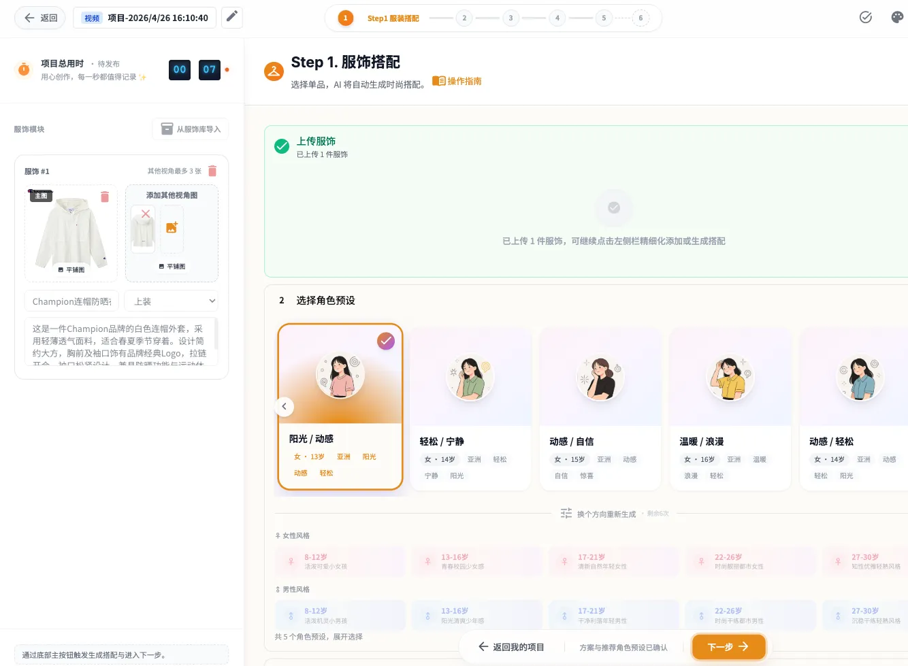
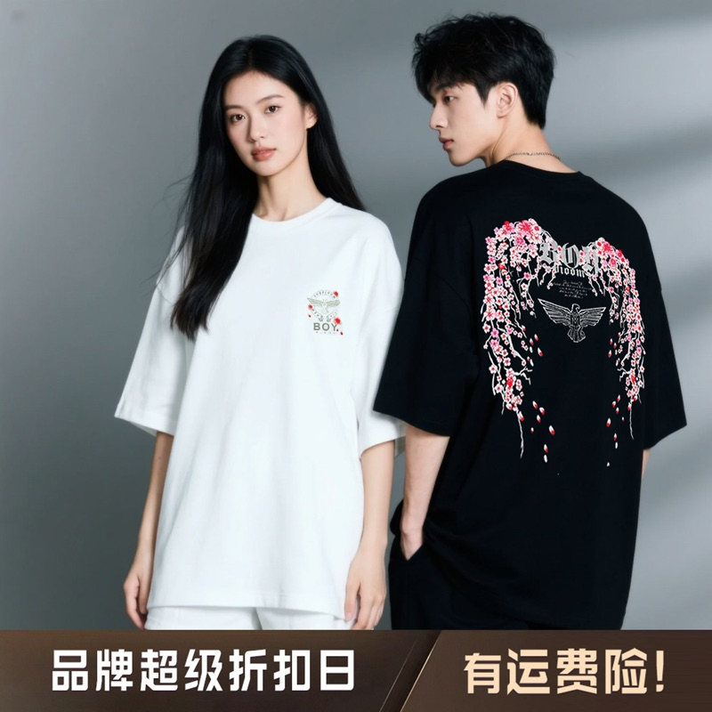
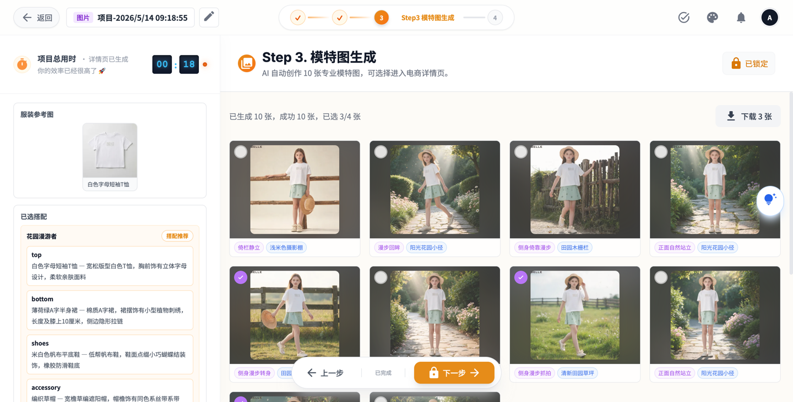
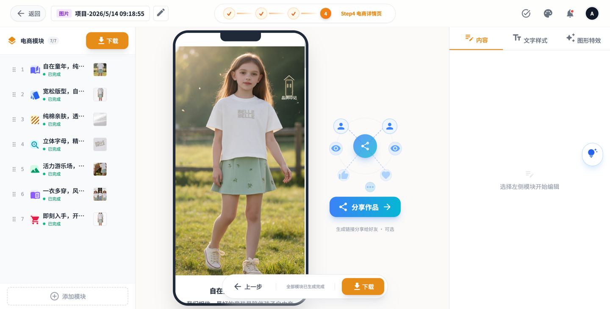

1
开始前最重要的决策
项目类型选择后不可撤回，请仔细阅读
1.1 四种项目类型对比
| 项目类型 | 流程步骤 | 产出物 | 适用场景 |
|---|---|---|---|
| 视频项目 | 6 步（服装→定妆→脚本分镜→视频生成→发布→裂变） | 电商短视频 | 需要生成商品展示视频的商家 |
| 图片项目 | 4 步（服装→定妆→模特图→详情页） | 商品详情页图片 | 需要生成商品主图/详情图的商家 |
| 换装项目 | 4 步（选视频→选服装→选角色→一键换装） | 换装视频 | 已有视频，需要替换服装的商家 |
| 反推项目 | 从创作广场输入视频链接→AI反推脚本→联合反推生成搭配→定妆→脚本分镜→视频生成→发布→裂变 | 电商短视频 | 看到别人的爆款视频，想复刻类似风格的商家 |
1.2 视频项目适合哪些商家？
✓
需要生成电商短视频的商家
— 抖音、快手、小红书等平台的商品展示视频
✓
已有服装素材，想快速产出视频
— 上传服装照片，AI 自动生成搭配和视频
✓
需要批量生成多个服装视频
— 打开多个页面，分别生成视频
✗
暂不建议的情况
— 只有一张图片、图片质量差、服装不清晰
1.3 案例：服装店老板小王的选择
真实案例
小王经营一家女装店，最近进了 5 款春装新品，想在抖音上发短视频推广。
他的选择：视频项目
原因：需要给每款服装生成独立的展示视频，方便在抖音发布。他有现成的服装照片，可以直接上传使用。
结果：1 个小时完成了 5 个主视频，裂变了 10 几个，顺利发布到抖音。
2
反推项目 — 从视频到创作⏱️ 5-15 分钟
从创作广场/Dashboard 输入视频链接，AI 自动反推脚本并生成项目
2.1 什么是反推项目？
反推项目是内容喵的特色功能 — 您看到一个喜欢的电商短视频，想要制作类似风格的视频，只需将视频链接输入系统，AI 会自动分析视频内容，提取脚本、分镜、服装搭配等关键信息，帮您快速复刻。
✓
输入视频链接即可开始
— 支持抖音链接、视频直链、或上传本地视频文件
✓
AI 自动提取脚本和分镜
— LLM 多模态分析视频内容，提取脚本文案和分镜画面
✓
自动推导服装搭配方案
— 联合反推自动从视频中识别服装，生成搭配推荐
✓
后续步骤与普通视频项目一致
— 从定妆到裂变，完全复用视频项目流程
2.2 如何进入反推项目
反推项目有两个入口：
| 入口 | 位置 | 操作方式 |
|---|---|---|
| 创作广场（Dashboard） | 侧边栏「创作广场」页面 | 在顶部输入框粘贴视频链接，点击「一键复刻」按钮；或在广场视频卡片上点击「一键复刻」 |
| 脚本中心 | 侧边栏「脚本中心」页面 | 查看反推完成的脚本，点击「投入创作」创建反推项目 |
💡 提示：推荐从「创作广场」开始，一步完成视频分析和项目创建。如果您已经反推过视频，可在「脚本中心」直接投入创作。
2.3 反推项目完整流程
反推项目分为两个阶段：视频反推分析 和 反推项目创作。
阶段一：视频反推分析（从视频到脚本）
1
输入视频来源
— 粘贴抖音链接、视频直链或上传本地视频
2
系统自动分析视频
— 依次执行：解析链接 → 下载视频 → 上传存储 → LLM 多模态分析 → 写入脚本库
3
查看反推结果
— 包含脚本正文、分镜帧数据、分析报告、关键词标签
4
点击「投入创作」创建项目
— 自动创建反推项目，进入 Step1
阶段二：反推项目创作（从脚本到视频）
5
Step1 联合反推
— 系统自动从反推脚本推导服装搭配方案和角色方向，无需手动上传服装
6
Step2-Step6 与普通视频项目一致
— 定妆 → 脚本分镜（可基于反推脚本改写） → 视频生成 → 发布 → 裂变
⚠️ 注意：反推项目在 Step1 阶段不需要手动上传服装图片，系统会从反推的视频中自动提取并生成搭配方案。确认搭配后，后续步骤与普通视频项目完全一致。
2.4 支持的视频来源
| 输入类型 | 说明 | 注意事项 |
|---|---|---|
| 抖音链接 | 粘贴抖音短视频分享链接 | 支持抖音短视频链接解析 |
| 视频直链 | 粘贴视频文件的直接下载链接 | 链接需可直接访问视频文件 |
| 上传本地视频 | 直接上传本地视频文件 | 视频需清晰，时长适中 |
2.5 反推项目与普通视频项目的区别
| 维度 | 普通视频项目 | 反推项目 |
|---|---|---|
| 起点 | 手动上传服装图片开始 | 从已有视频/脚本反推开始 |
| 入口 | 项目管理页面创建 | 创作广场/脚本中心 |
| Step1 行为 | 手动上传和选择服饰 | 联合反推自动生成搭配方案和角色方向 |
| 脚本来源 | Step3 从零生成脚本 | Step3 可基于反推脚本改写优化 |
| 后续步骤 | 定妆→脚本分镜→视频→发布→裂变 | 与普通视频项目完全一致 |
2.6 案例：小王从爆款视频复刻
真实案例
小王在抖音上看到一个同行的爆款服装展示视频，想做一个类似风格的视频推广自己的新款衬衫。
操作：进入「创作广场」，粘贴该抖音视频链接，点击「一键复刻」
反推结果：系统自动分析了视频的脚本、分镜和服装搭配，生成了完整的脚本库
投入创作：点击「投入创作」，系统自动从反推脚本推导出搭配方案和角色方向
结果：从输入链接到获得搭配方案仅需 5-10 分钟，后续正常走定妆→脚本分镜→视频生成流程即可
3
Step1：服装上传与搭配推荐⏱️ 3-5 分钟
上传服装照片，系统自动推荐搭配方案
进度：
Step 1/6
3.1 上传前的准备清单
✓
建议上传正面图，如果背面/侧面有图案，建议补充其他视角图（套装不要遮挡细节）
✓
按步骤操作
— 上传图片 → 识别平铺图 → 角色预设 → 穿搭风格
✓
认真选择适合衣服的风格
— 风格选择会影响后续生成效果
✗
图片不要过大
— 单张图片小于 4M，过大可能导致上传失败
服饰#1 — 主服装（可分开或一起上传）

正面示例

背面示例（如有图案建议上传）
服饰#2 — 搭配服装（可选）

搭配服装示例
如果需要搭配，可在【服饰#2】上传搭配服装
完整操作示例

上传服装 → 识别 → 选择风格 → 确认搭配的完整流程示例
💡 提示：照片质量越好，生成效果越好。建议使用清晰、光线均匀的正反面照片。
⚠️ 不推荐示范（可能影响生成效果）

套装不能重叠遮盖

套装不能重叠遮盖

不要包含模特人物
不要有水印/服饰外其他logo

背景不能太复杂

不要有大量文字干扰

不同颜色服装不要混在一起上传
3.2 系统搭配推荐是什么
上传服装照片后，系统会自动分析服装风格、颜色、款式，为您推荐合适的搭配方案。您可以选择系统推荐，也可以自行调整搭配。

角色预设界面

穿搭风格选择界面
3.3 如何选择搭配方案
✓
查看整体搭配效果
— 系统会展示服装组合的预览图
✓
考虑目标场景
— 选择适合展示场景的搭配（如休闲、商务、户外）
✓
确认后不可更改
— 选择搭配方案后进入下一步，无法退回修改
⚠️ 注意：搭配方案确认后将进入定妆环节，无法返回此步骤修改。请仔细确认后再进入下一步。
3.4 案例：小王上传了 3 款服装
真实案例
小王上传了 3 款春装：白色衬衫、浅蓝色牛仔裤、米色风衣。
系统推荐：三件搭配成"都市通勤"风格套装
小王的操作：确认采用系统推荐，点击"下一步"进入定妆环节。
4
Step2：角色定妆⏱️ 1-2 分钟
确定视频中人物的形象和风格
进度：
Step 2/6
4.1 定妆是什么？为什么重要？
定妆是为视频中的虚拟人物确定形象和风格。系统会根据您的服装和风格偏好，生成适合的人物形象。定妆结果会影响视频的整体风格和人物表现。

角色选择界面示例
4.2 定妆前需要准备什么
✓
目标风格描述
— 可选择休闲、商务、优雅、运动等风格
✓
参考图片（可选）
— 有喜欢的风格图片可以上传参考
4.3 五视图是什么，如何确认
五视图是系统生成的人物形象多角度展示：正面、侧面、背面、四分之三侧面等。
✓
检查人物形象是否符合预期
— 确认服装、发型、妆容风格
✓
检查各角度是否协调
— 确保正反面、侧面风格一致
✓
不满意可重新生成
— 如不满意，可调整描述重新生成
4.4 案例：小王定妆"都市白领"风格
真实案例
小王希望视频风格偏"都市白领"，适合上班族穿着场景。
操作：选择"都市白领"风格标签，系统生成职业女性形象
五视图确认：小王仔细查看五个角度的人物形象，确认符合预期后点击"确认定妆"
5
Step3：脚本与分镜生成⏱️ 8策略并行 4-9分钟
9 种 AI 策略并行生成多样化脚本，选择最适合的方案
进度：
Step 3/6
5.1 脚本生成的工作原理⏱️ 2-6 分钟
系统根据您的服装、搭配和定妆风格，通过 9 种 AI 策略并行 生成脚本，每种策略侧重不同的创意方向，产出多样化的脚本供您选择：
| 策略 | 风格特点 | 适合场景 |
|---|---|---|
| 📚 库存精选 | 经典稳定、复用优质脚本模板 | 快速产出、稳妥可靠 |
| 🎬 视频热榜 | 紧跟热门视频趋势 | 蹭热度、紧跟潮流 |
| 🔥 实时热榜 | 捕捉当下最新热点话题 | 时效性强、话题引爆 |
| 🤖 实时智能 | AI 智能匹配最佳脚本方案 | 不知选什么时推荐 |
| 🎭 场景化脚本 | 围绕具体场景构建叙事 | 场景明确、有故事性 |
| 👗 时尚大片 | 时装杂志风格、视觉冲击 | 高端服装、品牌展示 |
| ❤️ 情感原型 | 从情感共鸣切入叙事 | 打动人心、引发共鸣 |
| ✨ 生活美学 | 日常氛围、慢节奏叙事 | 生活方式、柔和表达 |
💡 建议：每种策略各有所长，不必只看一种。浏览所有策略生成的脚本，选择最符合您品牌调性的方案。

脚本生成和选择界面
5.2 如何选择脚本
按需求场景快速定位：
✓
想稳妥快速
— 库存精选 / 实时智能
✓
想蹭热点引流
— 视频热榜 / 实时热榜
✓
想讲品牌故事
— 场景化脚本 / 情感原型
✓
想高端视觉感
— 时尚大片
✓
想生活方式感
— 生活美学
选择要点：
✓
浏览所有策略的脚本
— 不同策略视角不同，总有更适合的
✓
不满意可对某策略重新生成
— 已完成或异常的策略卡片支持点击重新生成
✓
确认脚本时长是否合适
— 根据需求选择合适长度的脚本
5.3 分镜的作用和确认要点⏱️ 2-3 分钟
分镜是将脚本转化为可视化的画面预览。每个分镜对应视频中的一个镜头，展示人物动作、服装展示方式、场景背景等。

分镜预览界面
✓
检查服装是否正确展示
— 确认服装细节清晰可见
✓
检查场景是否符合预期
— 背景、光线是否与服装搭配
✓
检查人物动作是否自然
— 姿态、表情是否协调
⚠️ 注意：脚本和分镜确认后将进入视频生成环节，无法返回修改。请仔细检查后再确认。
5.4 案例：小王从 9 种策略中选择脚本
真实案例
系统通过 9 种 AI 策略并行生成了多个不同风格的脚本，覆盖库存精选、时尚大片、情感原型等方向。
操作：小王浏览了各策略生成的脚本，选择了适合抖音推广的"时尚大片"策略脚本，视觉效果强、品牌感突出
分镜确认：查看每个分镜画面，确认服装展示效果，点击"确认分镜"
6
Step4：视频生成与合成⏱️ 3-6 分钟
AI 自动生成视频内容
进度：
Step 4/6
6.1 视频生成⏱️ 2-5 分钟
视频生成需要一定时间，具体时长取决于视频长度和复杂度。系统会根据分镜自动生成视频片段。

视频生成进度界面
💡 提示：生成过程中您可以离开页面，系统会自动保存进度。完成后会有通知提醒。
6.2 如何查看生成进度
在项目详情页可以看到当前生成进度和状态。包括：排队中、生成中、已完成。
6.3 合成⏱️ 约 1 分钟
视频片段生成完成后，需要进行合成。您可以：
✓
选择背景音乐
— 为视频添加合适的背景音乐
✓
设置是否卡点
— 视频节奏是否与音乐卡点
✓
修改封面
— 选择或上传视频封面图片
✓
可以多次合成
— 不满意可以重新调整合成参数

合成和再合成界面
6.4 不满意怎么办？
✓
重新合成
— 可以多次调整合成参数，重新合成
✓
裂变功能
— 基于当前视频，生成多个变体版本
7
Step5：发布准备
预览成片和分享
进度：
Step 5/6
7.1 预览成片
视频合成完成后，可以在线预览成片效果。检查画面质量、服装展示、整体流畅度。

预览成片和分享界面
7.2 发布前的检查清单
✓
视频时长是否符合平台要求
— 不同平台有不同的时长限制
✓
视频画面是否清晰
— 检查服装细节是否清楚
✓
视频内容是否符合平台规范
— 确保无违规内容
7.3 分享和导出
可以将视频分享到社交平台，或导出到本地保存。
8
Step6：裂变扩展⏱️ 5-10 分钟
基于已生成的视频创建更多变体
进度：
Step 6/6
8.1 裂变是什么？能做什么？
裂变功能可以基于已完成的视频，快速生成多个变体版本。一键裂变，支持删除后重新裂变。

裂变功能界面
✓
不同风格版本
— 同一服装，不同背景或音乐
✓
不同时长版本
— 裁剪成不同长度适应各平台
✓
批量生成
— 一次生成多个变体，提高效率
8.2 如何使用裂变功能
在项目详情页点击"裂变"按钮，选择裂变类型和参数，系统会自动生成变体视频。如不满意可删除后重新裂变。
+
附录：时间预估总览
完整一个项目流程大约需要 15-30 分钟，支持多个项目同时进行
各步骤时间预估
| 步骤 | 操作内容 | 预估时间 |
|---|---|---|
| Step1 | 上传图片、识别平铺图、角色预设、穿搭风格 | 3-5 分钟 |
| Step2 | 角色生成 | 1-2 分钟 |
| Step3 | 脚本生成（9 种策略并行） | 2-6 分钟 |
| Step3 | 分镜预览图生成 | 2-3 分钟 |
| Step4 | 视频生成 | 2-5 分钟 |
| Step4 | 合成（选择音乐、是否卡点、修改封面） | 约 1 分钟 |
| Step6 | 裂变（一键裂变，可多次重试） | 5-10 分钟 |
| 反推 | 视频反推分析（输入链接→AI分析→生成脚本） | 5-10 分钟 |
| 联合反推 | 反推项目 Step1 自动生成搭配方案和角色方向 | 2-5 分钟 |
服装拍摄要点
| 拍摄要点 | 具体要求 | 注意事项 |
|---|---|---|
| 正面图 | 清晰展示服装正面全貌 | 光线均匀，背景简洁 |
| 背面/侧面 | 如有图案建议补充其他视角图 | 确保图案细节可见 |
| 搭配服装 | 如需搭配可在【服饰#2】上传 | 系统会自动推荐搭配方案 |
| 图片质量 | 清晰度高，无模糊 | 质量越好生成效果越好（不过图片不要过大，小于 4M） |
常见问题
?
项目类型选错了怎么办？
— 无法撤回，需要重新创建新项目
?
服装照片上传后不满意怎么办？
— 在生成角色预设前可以重新上传
?
定妆后能修改吗？
— 确认后无法修改，需要重新创建项目
?
脚本锁定后可以更换吗？
— 不行，确认锁定后会自动生成分镜预览图，无法撤回
?
视频生成不满意怎么办？
— 可以重新生成
?
分镜预览图不满意怎么办？
— 可以重新生成
?
可以导出视频到本地吗？
— 可以，在成片页面点击下载
?
合成不满意可以重试吗？
— 可以多次合成，调整音乐、卡点、封面
?
反推项目支持哪些视频来源？
— 支持抖音链接、视频直链、本地视频上传三种方式
?
反推分析失败怎么办？
— 请检查视频链接是否有效，或尝试重新输入链接
?
反推项目的脚本可以修改吗？
— 可以，在 Step3 脚本与分镜阶段可基于反推脚本进行改写优化
?
反推项目还需要手动上传服装吗？
— 不需要，系统会从反推的视频中自动提取服装信息并生成搭配方案
1
开始前：图片项目是什么？⏱️ 10-20 分钟
4 步完成电商商品详情页从模特到详情页的一站式制作
1.1 图片项目适合哪些商家？
图片项目专注于生成高质量电商商品详情页图片，适合：
✓
需要生成商品详情页的商家
— 淘宝、京东、拼多多、抖音小店等平台的商品详情主图与详情图
✓
已有服装照片，需要模特展示
— 上传服装照片，AI 自动匹配模特生成专业商品图
✓
需要快速产出多套详情页
— 一次可制作多张详情页，分别发布
✗
暂不建议的情况
— 需要视频内容、需要动态展示效果
1.2 图片项目 vs 视频项目
| 维度 | 图片项目 | 视频项目 |
|---|---|---|
| 步骤数 | 4 步（服装→定妆→模特图→详情页） | 6 步（服装→定妆→脚本分镜→视频→发布→裂变） |
| 产出物 | 商品详情页长图（可分享、可下载） | 电商短视频（可分享、可裂变） |
| Step1-2 | 服装上传 + 角色定妆（与视频项目一致） | 服装上传 + 角色定妆 |
| Step3 | 模特图生成：AI 生成 2-12 张模特穿搭图 | 脚本与分镜：AI 生成 9 种策略脚本 + 分镜预览 |
| Step4 | 电商详情页：AI 规划模块 + 图文编辑 + 长图合成 | 视频生成 + 合成：AI 生成视频片段 + 背景音乐 |
| 时间预估 | 10-20 分钟 | 15-30 分钟 |
1.3 案例：服装店老板小王的选择
真实案例
小王经营一家童装店，进了 3 款春夏新品童装，想在淘宝和拼多多上架商品详情页。
他的选择：图片项目
原因：需要为每款童装生成模特展示图 + 商品详情页，他有现成的服装平铺照片，可以直接上传。
结果：20 分钟完成了 3 个详情页，顺利上架到淘宝。
2
Step1：服装上传与搭配⏱️ 3-5 分钟
上传服装照片，系统自动推荐搭配方案（与视频项目 Step1 完全一致）
进度：
Step 1/4
2.1 上传前的准备
图片项目的 Step1 与视频项目完全相同。上传服装照片后，系统会自动分析服装风格、颜色、款式，为您推荐搭配方案。
✓
建议上传正面图，补充背面/侧面图
— 套装不要遮挡细节
✓
按步骤操作
— 上传图片 → 识别平铺图 → 角色预设 → 穿搭风格
✓
认真选择适合的风格
— 风格选择会影响后续生成效果
✗
图片不要过大
— 单张图片小于 4M
💡 提示：详细操作请参考 视频项目 Step1 章节，两者完全一致。
3
Step2：角色定妆⏱️ 1-2 分钟
确定模特形象和风格（与视频项目 Step2 完全一致）
进度：
Step 2/4
3.1 定妆流程
图片项目的 Step2 与视频项目完全相同。系统会根据服装和风格偏好，生成适合的人物形象，影响整体模特图风格。
✓
选择目标风格
— 休闲、商务、优雅、运动、学院风等
✓
检查五视图
— 确认人物形象、服装、发型、妆容是否符合预期
✓
不满意可重新生成
— 确认后不可退回修改
💡 提示：详细操作请参考 视频项目 Step2 章节，两者完全一致。
4
Step3：模特图生成⏱️ 3-8 分钟
AI 自动创作多张专业模特图，选择进入电商详情页
进度：
Step 3/4
4.1 生成前的设置
进入 Step3 后，页面顶部会显示服装参考图和搭配方案、角色预设等信息，确认无误后可开始生成模特图。
✓
选择生成数量
— 可选 2/4/6/8/10/12 张，数量越多选择余地越大
✓
上传品牌 Logo（可选）
— 支持 PNG/WebP 格式，透明背景，会自动叠加到模特图上
✓
点击「一键生成」
— 系统会弹出确认提示，开始后自动创作

Step3 模特图生成界面，已生成 10 张，可选择 1-4 张进入下一步
4.2 生成过程与进度
生成过程分为多个阶段，页面顶部进度条会实时显示：
1
AI 规划中
— 系统根据服装和角色信息，智能规划姿势与背景组合
2
创建照片
— 按规划方案逐一创建模特图
3
准备生成 → 生成图片
— 显示进度计数，如 "3/10"
4.3 如何选择模特图
生成完成后，图片以网格形式展示。每张图左上角有复选框，用于勾选满意的图片。
✓
至少选择 1 张
— 需要选中至少 1 张模特图才能进入下一步
✓
最多选择 4 张
— 系统建议选 4 张以内，便于后续电商详情页排版
✓
点击图片可放大预览
— 支持左右切换、键盘方向键导航
✓
勾选后可下载
— 底部工具栏显示「下载 N 张」按钮
4.4 进入电商详情页
选择好模特图后，点击底部工具栏的「下一步」按钮。
✓
确认提示
— 系统会提示 "将使用已选中的 N 张模特图生成电商详情页，确认继续？"
✓
确认后进入 Step4
— 项目状态变更为 "模特图已选定"，跳转至电商详情页编辑
✗
Step3 进入后锁定
— 进入 Step4 后无法退回修改模特图
5
Step4：电商详情页⏱️ 5-15 分钟
AI 自动规划模块 + 生成图片 + 编辑文字样式 + 长图合成分享
进度：
Step 4/4
5.1 页面布局总览
Step4 采用三栏布局：左侧模块树、中间手机预览、右侧编辑面板。

Step4 电商详情页编辑界面：左侧模块列表、中间手机预览、右侧编辑面板
| 区域 | 功能 |
|---|---|
| 左侧：模块树 | 显示所有电商模块，支持拖拽排序、单个生成/删除、添加新模块 |
| 中间：手机预览 | 模拟手机端商品详情页的实时预览效果，点击模块进入编辑模式 |
| 右侧：编辑面板 | 三个 Tab 页：内容（标题/正文）、文字样式（字体/颜色/位置）、图形特效（装饰/艺术字） |
5.2 AI 自动规划模块
进入 Step4 后，系统会自动执行「模块规划」，根据模特图、服装搭配和角色风格，智能规划电商详情页的模块结构：
1
AI 规划模块
— 自动生成 7-8 个模块，包含品牌介绍、版型展示、面料细节、场景图、搭配指南、购买引导等
2
模块列表展示
— 规划完成后，左侧显示所有模块，状态为"待生成"
3
点击「生成全部」
— 一键生成所有模块图片，也可逐个点击生成按钮
5.3 模块类型说明
系统支持 12 种模块类型，覆盖电商详情页的常见场景：
| 模块类型 | 用途 |
|---|---|
| outfit_overview | 整体穿搭概览，展示全身搭配效果 |
| detail_showcase | 细节展示，突出服装亮点 |
| scene_application | 场景应用，模特在实际场景中展示 |
| material_texture | 面料质感，展示材质与手感 |
| size_comparison | 尺码对比，帮助买家选择合适尺码 |
| call_to_action | 购买引导，促进下单转化 |
| brand_story | 品牌故事，建立信任感 |
| styling_guide | 穿搭指南，展示多种搭配方式 |
| detail_closeup | 细节特写，聚焦工艺与设计 |
| outfit_recommendation | 搭配推荐，搭配其他商品购买 |
| user_review | 用户评价，展示买家口碑 |
| 自定义模块 | 点击「添加模块」，可手动新增任意类型 |
5.4 编辑模块内容
点击左侧任一模块，右侧编辑面板会自动切换到该模块的编辑状态。编辑面板有三个 Tab：
Tab 1：内容
✓
编辑标题
— 修改模块标题文字，最多 100 字
✓
编辑正文
— 修改模块文案描述，最多 2000 字，右下角显示字数统计
✓
版本历史
— 展开可查看历次修改，点击可回退到任一历史版本
Tab 2：文字样式
✓
字体大小
— 5 档可选：18px / 24px / 32px / 36px / 48px
✓
字体风格
— 12 种字体：黑体、宋体、楷体、仿宋、微软雅黑等
✓
文字颜色
— 6 种预设：深灰、灰色、浅灰、黑色、白色、主题色
✓
对齐与位置
— 左中右对齐 + 上/下/左/右位置调整
✓
文字背景
— 可开启/关闭文字背景色，4 种预设（浅灰、白色、渐变、透明）
Tab 3：图形特效
✓
装饰图形
— 为模块添加形状装饰，可调节颜色、透明度、旋转角度
✓
标签文字
— 如 "透气"、"高弹" 等标签，最多 4 个汉字
✓
艺术字效果
— 18 种风格：描边字、立体字、渐变字、霓虹字、印章字、金属立体、冰晶字等
5.5 长图合成与下载
所有模块生成完成后，底部工具栏会显示「下载」按钮，点击可合成并下载长图。
✓
长图合成
— 将所有模块按左侧顺序拼接成一张完整的详情页长图
✓
拖拽排序
— 可在合成前拖拽调整模块顺序
✓
随时重新生成
— 单个模块不满意可点击重新生成
5.6 分享功能
所有模块生成完成后，页面右上角会出现「分享作品」按钮。
✓
生成分享链接
— 点击后自动生成可分享的在线预览链接
✓
复制/扫码
— 支持复制链接发送到手机，或扫描 QR 码直接查看
✓
移动端适配
— 分享页面为手机端自适应布局，方便直接预览
5.7 案例：小王完成童装详情页
真实案例
小王选定了 3 张模特图后，点击"进入电商详情页"进入 Step4。
AI 规划：系统自动规划了 7 个模块，包含品牌介绍、版型展示、面料细节、场景图、搭配指南、尺码参考、购买引导
生成全部：点击"生成全部"，AI 逐一生成各模块图片，约 3-5 分钟完成
编辑调整：小王修改了标题文案，将字体改为"黑体"，位置设为底部居中，效果更加醒目
完成发布：确认所有模块后，合成下载长图，直接上传到淘宝商品详情页
+
图片项目：时间预估与常见问题
完整流程大约需要 10-20 分钟
各步骤时间预估
| 步骤 | 操作内容 | 预估时间 |
|---|---|---|
| Step1 | 上传图片、识别平铺图、角色预设、穿搭风格 | 3-5 分钟 |
| Step2 | 角色生成、五视图确认 | 1-2 分钟 |
| Step3 | 模特图生成（AI 规划 + 图片生成 + 选择） | 3-8 分钟 |
| Step4 | 电商详情页（AI 规划模块 + 生成图片 + 编辑 + 合成） | 5-15 分钟 |
常见问题
?
图片项目的 Step1 和视频项目有什么区别？
— 完全一致，操作方式相同
?
模特图可以生成多少张？
— 可选 2/4/6/8/10/12 张，建议至少选 4 张
?
进入 Step4 后能退回修改模特图吗？
— 不能，Step3 进入后会锁定，需要重新创建项目
?
电商详情页模块不满意怎么办？
— 可单个模块重新生成，也可删除后添加新模块
?
可以导出详情页到本地吗？
— 可以，合成后下载长图即可保存到本地
?
分享链接有效期多久？
— 链接在项目有效期内有效，可随时查看
?
Logo 上传后能替换吗？
— 可以，在 Step3 生成前可随时替换或删除 Logo